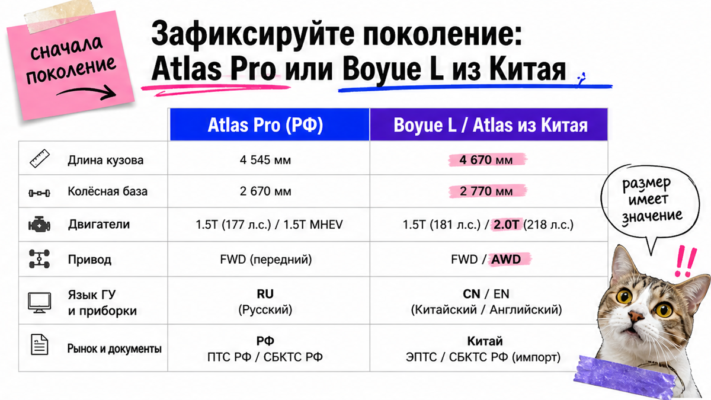
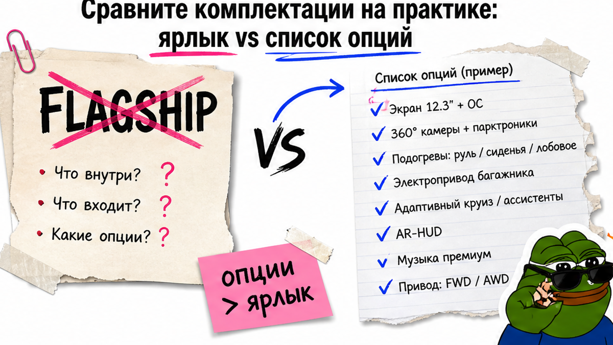
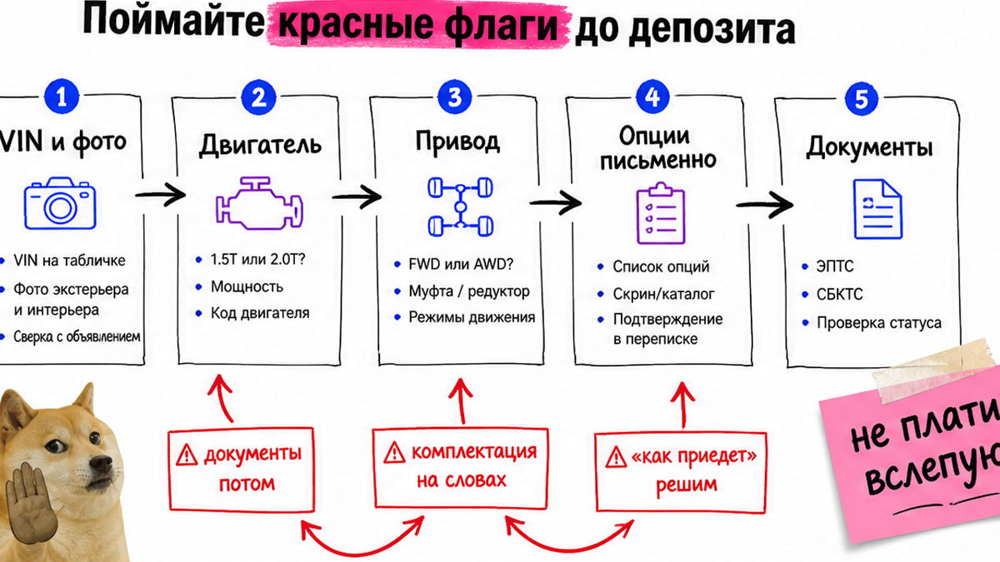

Уже почти внесли предоплату за "Atlas Flagship из Китая": в карточке красивые фото и слово Flagship, а после уточнения выяснилось – это Boyue L 1.5 без полного привода, без подогрева руля и с китайским меню. Боль типичная: депозит "на красивое объявление" и путаница Atlas Pro / Boyue L / Atlas L. Ниже – как сверить комплектацию до денег: поколение, мотор, привод, опции по факту и документы. Сможете собрать мини-чек-лист в чат сегодня.
Инсайт до депозита: Китайский кроссовер нового поколения чаще зовут Boyue L (на экспорте – Atlas / Starray), а не "тот же Atlas Pro" у дилера в РФ. Слово Flagship в объявлении не равно российской Flagship. У типичного Boyue L / Atlas L из КНР привод передний. Депозит – только после письменного списка: модель, мотор 1.5 или 2.0, привод, 8–12 опций, VIN/фото и план ЭПТС + СБКТС.
На практике люди смотрят "джили атлас из китая" и ждут полный привод "как у официалов". Сюрприз ждёт уже на имени: Boyue L длиннее и шире Atlas Pro, моторы другие, гарантия РФ-дилера обычно не переносится. Мы в Авто-Сейлс во Владивостоке сначала фиксируем ТЗ, а не чужую "цену под ключ".
ЭПТС – электронный паспорт транспортного средства (для постановки на учёт). СБКТС – свидетельство о безопасности конструкции. Без плана по этим бумагам депозит – лотерея.

Первая ошибка – смешать поколения в одном чате. Atlas Pro у официального дилера в РФ – другой кузов. Boyue L / Atlas нового поколения из Китая – уже другая машина: длиннее, другая база, другие моторы.
| Параметр | РФ Atlas Pro (официал) | Китай Boyue L / Atlas L |
|---|---|---|
| Имя | Atlas Pro | Boyue L (экспорт: Atlas / Starray) |
| Габариты (ориентир) | ~4544 × 1837 × 1713, база ~2670 мм | 4670 × 1900 × 1705, база 2777 мм |
| Моторы | 1.5T ~177 л.с. + 48V | 1.5TD / 2.0TD (офиц. таблица Geely) |
| Привод | есть полный привод в линейке | у типичного Boyue L / Atlas L – передний (FWD) |
| Гарантия / ГУ | дилерская логика РФ | заводская гарантия страны продажи обычно не переносится; меню часто китайское |
Сделайте так: напишите продавцу одной фразой целевое поколение – "Boyue L / Atlas нового поколения из Китая" или "мне нужен полный привод как у Atlas Pro". Не делайте так: кивать на слово "Atlas" в заголовке.
Удивительный факт: на китайском рынке "тот же Atlas" часто называется Boyue L. Если в переписке нет китайского имени – проверьте ещё раз.

Второе место, где ломается сделка – слово Flagship вместо списка. В официальной таблице Geely по Boyue L встречаются Dragon, Honour, Flagship, Intelligent. У поставщиков в 2025–2026 часто плавают Yangfan, Qicheng, Shanhe, Jinxiu. Ярлыки разные, вам нужен список "по факту".
Например, на старших уровнях в офиц. PDF встречается большой AR-HUD. На практике в объявлении пишут "топ", а в салоне нет ни проекции, ни нужных подогревов. Типичная ошибка – спорить о названии комплектации вместо фото экрана, руля и багажника.
Схема сверки комплектации:
Китайское имя модели → мотор 1.5 или 2.0 → привод → 8–12 must-have опций → фото салона/экрана → VIN → только потом депозит
Соберите must-have до разговора о цене:
Сделайте так: требуйте китайское имя комплектации плюс пункты списком. Не делайте так: принимать одно слово Flagship как доказательство.
Мотор: 1.5 чаще берут под город, 2.0 – если важны трасса и полная загрузка. Готовые суммы пошлин и утиля здесь не публикуем – расчёт сделаете в каталоге под лот.

Боль здесь простая: деньги ушли, а потом всплыли "ну это же почти то же самое". Флаги ловят до перевода.
Из разборов параллельного ввоза видно: ЭПТС могут аннулировать при занижении характеристик. СБКТС из "серых" лабораторий тоже уже становились новостью. "Документы потом" – не ускорение, а риск.
Сделайте так: останавливайте сделку на любом флаге, пока нет письменного ответа. Избегайте спешки: не торопитесь из-за "лота два, завтра уйдёт".
Выберите один лот и разберите его как экзамен. Проверьте фото салона: разъёмы, экран, кнопки на руле, проекцию. На практике у дилерского Atlas и китайского Boyue L отличаются USB, ОС и зимний пакет – из-за таких мелочей потом пишут злые отзывы.
Сделайте так: ведите сверку письменно в одном чате. Не делайте так: менять ТЗ после "скидки за быстрый перевод".
Результат этого блока: у вас не "красивая карточка", а лист сверки. Если продавец уходит от VIN и списка опций – вы уже сэкономили нервы.
Критерий успеха до депозита: в чате лежит письменный список – китайское имя, мотор, привод, 8–12 опций, VIN/фото и пакет ЭПТС+СБКТС (или план оформления). Без этого перевод фиксирует ошибку.
Нужен расчёт под лот – откройте каталог Авто-Сейлс и пришлите готовое ТЗ. Детали удобно уточнить в Telegram avtosales125. Форм на странице нет: подбор и цифры живут в каталоге и переписке.
Сделайте так: идите по чеклисту сверху вниз. Не делайте так: копировать чужие суммы "под ключ" как обещание себе.
Короткий чеклист на сегодня:
После этих шагов вы получите не абстрактный "обзор джили атлас комплектации", а рабочее ТЗ: сможете сами отсеять чужой Flagship или передать готовый список менеджеру без сюрприза после прихода авто.
Материал проверен: Редакция Авто-Сейлс (эксперты по авто под заказ из Японии, Кореи и Китая).
Источники по теме: официальный PDF спецификаций Geely Boyue L, страница Geely Atlas Pro для РФ, разборы параллельного ввоза (motorist.expert), сравнения на DRIVE2 и практика заказов через Владивосток; актуальные расчёты – в каталоге под конкретный лот.
Atlas Pro у дилера в РФ – другая машина по кузову, мотору и приводу. Из Китая чаще везут Boyue L / Atlas нового поколения. Напишите целевое поколение и мотор, а не только слово "Atlas".
Не начинайте с ярлыка Flagship. Соберите 8–12 must-have опций под зиму и семью, затем ищите уровень, где эти пункты есть по факту. Если полный привод обязателен – типичный Boyue L часто не подходит.
Проверьте поколение, мотор, привод, список опций, VIN/фото, план ЭПТС и СБКТС, язык меню и ожидания по гарантии. Цена без этого списка – ещё не оферта.
Сверьте имя Boyue L, габариты около 4670 мм и привод FWD в типичной поставке. РФ Atlas Pro короче и в линейке бывает полный привод.
Часто да: китайское меню встречается у машин из КНР. Заранее спросите, кто ставит русский интерфейс и что бывает с глюками.
Нет. Требуйте китайское имя комплектации и пункты оснащения. Flagship у поставщика и у РФ-дилера – разные наборы.